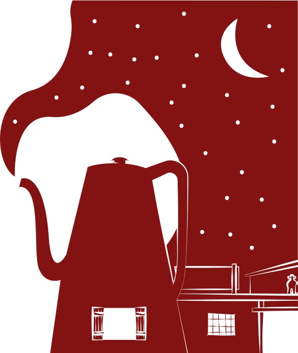
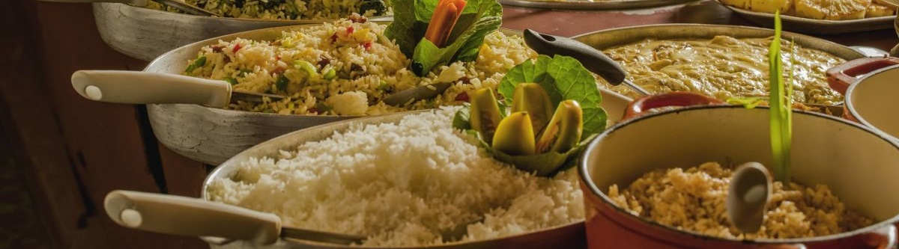

Bem vindo ao Restaurante
Noda de Caju

Itens do coração e alma do nordestino
De lá do canto, a estátua do padre Cícero observa os detalhes tão caprichosos. Toalha de fuxico, panela de barro e bules coloridos. Os banquinhos de madeira harmonizam com toda a decoração rústica do local, trazendo a cultura do Nordeste, preservada ao longo do tempo, direto para o Noda de Caju. Aqui a mesa é grande e a comida é farta. Só não se acanhe com as namoradeiras te olhando. Elas, assim como nós, só querem que você saia apaixonado pelos sabores nordestinos.

Delicias do dia

Buchada
Valor: R$ 15,00

Feijoada
Valor: R$ 12,00